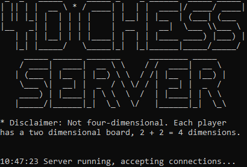
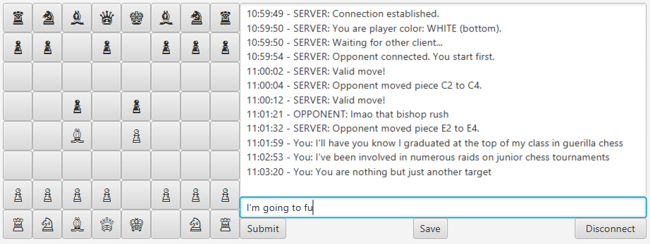
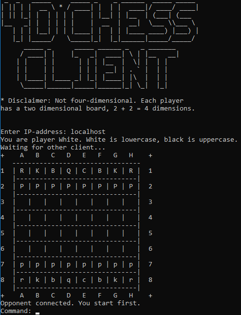

Tere tulemast nelja dimensioonilise male tutvustavale lehele!
Antud leht tuvustab mitmikmängija malet, mida saab üle võrgu mängida. Nimi tuleneb sellest, et kummalgi mängijal on ees kahe dimensiooniline pilt, seega kokku on neli dimensiooni. Projekt koosneb kolmest osast:
Server
Server haldab mänguseisu, kontrollib liigutuste legaalsust, rakendab reegleid (En Passant,
vankerdamine, jne), kontrollib mängu hetkeseisu (võit, viik, kuningas tule all) ning suhtleb
kummagi mängijaga, kandes edasi mängu seisu ja võttes vastu mängijate liigutussoove, sõnumeid.
Ebasobivate liigutuste korral palub mängijal uuesti proovida.
Server võimaldab ka jätkata eelnevalt pooleli jäänud mängu kasutades faili, kuhu selle mänguseis
salvestati.
Graafilise liidesega klient
GUI-ga klient võimaldab mängijal väga mugavalt serveriga suhelda, andes väga hea visuaalse ülevaate
ning võimaldab sisendit võtta intuitiivselt nuppude vajutuste järgi, kus esimesena vajutatud nupp määrab
malenupu, mida liigutada tahetakse, ning teisena vajutatud nupp sihtkoha, kuhu malenuppu liigutada tahetakse.
Võimalik on iga hetk mänguseis salvestada faili, et hiljem server käivitada pooleli jäänud mänguga. Enda korra
ajal saab vastasele kirjutada (filtrit ei ole) ning iga hetk on võimalik ühendus katkestada.
Käsurea klient
Esialgne klient, mis võimaldab peaaegu kõike, mida graafilise liidesega klientki (välja arvatud salvestamine).
Käsud antakse ette käsurea kaudu kasutades kokkulepitud süntaksit:
VM <kust> <kuhu> - nupu liigutamine, kus koordinaadid on kujul [A-H][1-8], programm
otsib koordinaadid sisendist ise üles, range vorm puudub
MSG <tekst> - vastasega suhtlemine
GM - serverilt mänguseisu küsimine
QUIT - sulgemine
Väärade sisendite puhul palub server uut sisendit. Vana ja uus klient saavad korraga samas serveris mängida.